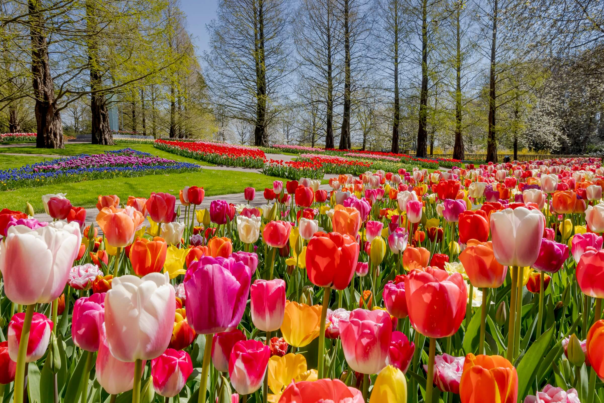

Most people think that tulips originated in the Netherlands with how iconic they are over there. But, they actually came from Central Asia where they grew as a wildflower. And they were first cultivated in Turkey around 1000 AD. The tulip name actually comes from the Turkish word for ‘turban’ for their similar appearances. Tulips were brought over to Europe in the 16th century by a biologist called Carolus Clusius. And by the 17th century, the popularity of tulips soared. Europeans just couldn’t get enough of the delightful blooms! The Netherlands loved tulips so much a phenomenon named ‘the tulip mania’ came in and caused the price of the flowers to skyrocket, crashing the markets. In the early 18th century tulips were still taking the world by storm. Turkey even had a whole tulip festival dedicated to them, which is still held today and is an impressive sight to see! And it was a crime that was punishable by exile to either buy or sell tulips outside of the capital, which isn’t still implemented today...thankfully! Nowadays, tulips represent one of the most popular flowers in the world. Holland is the most well-known place for tulips as they are widely cultivated to blanket fields with incredible colours that can be seen during springtime.
The most known meaning of tulips is perfect and deep love. As tulips are a classic flower that has been loved by many for centuries they have been attached with the meaning of love. They’re ideal to give to someone who you have a deep, unconditional love for, whether it’s your partner, children, parents or siblings.
